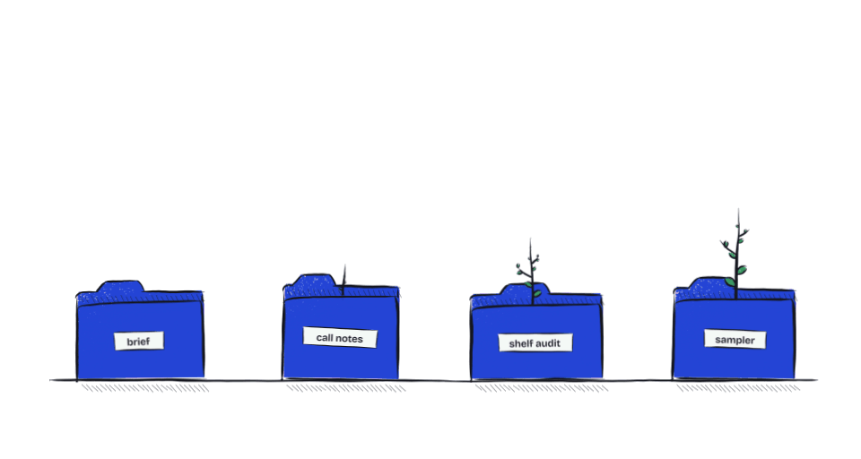
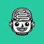
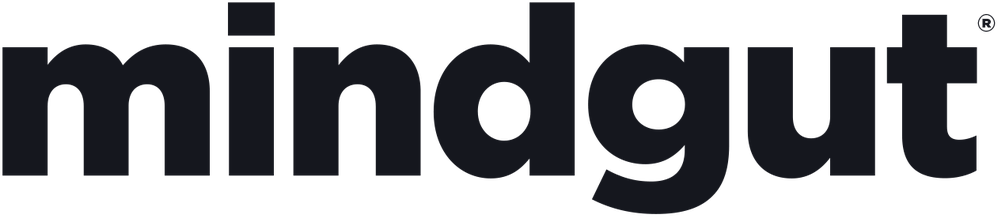

What working with Mir feels like.
Concept animations with fictional projects. They show the idea, not recorded product behaviour. Each loop is drawn live from the same source as its GIF.





Motion studies · concept animationsConcept animations with fictional projects. They show the idea, not recorded product behaviour. Each loop is drawn live from the same source as its GIF.
